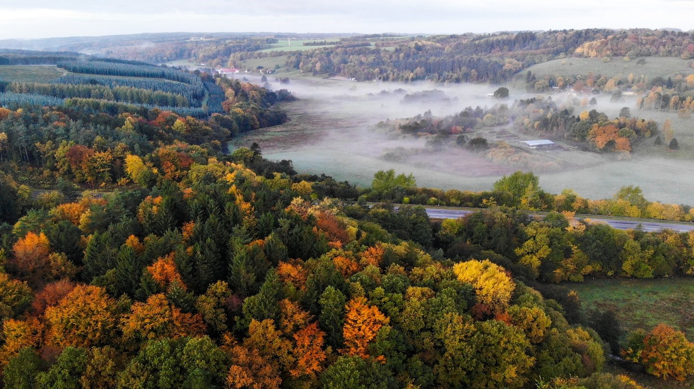
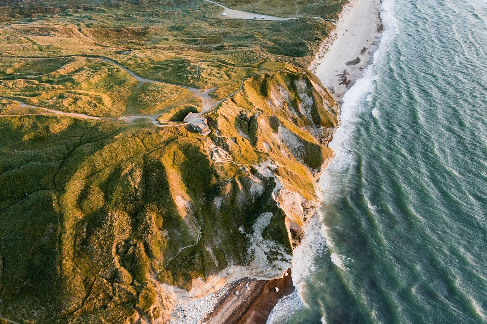
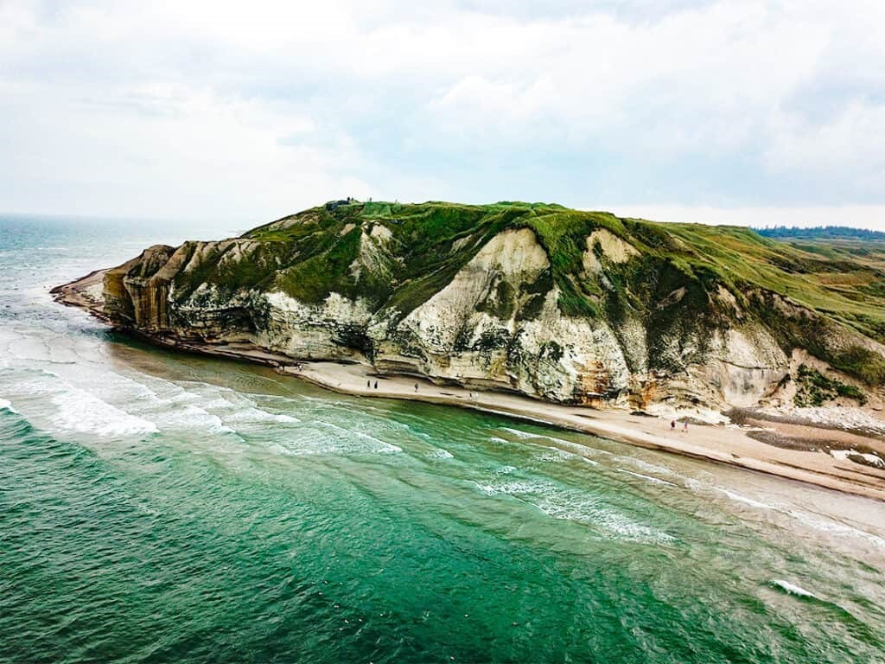

Ruta de los bosques
Una ruta sencilla para disfrutar de los bosques en cualquier época del año
Rutas, consejos y experiencias para disfrutar del aire libre

Una ruta sencilla para disfrutar de los bosques en cualquier época del año

Itinerario para las pequeñas montañas danesas. Vistas espectaculares.

Rutas a través de las maravillosas costas del Báltico